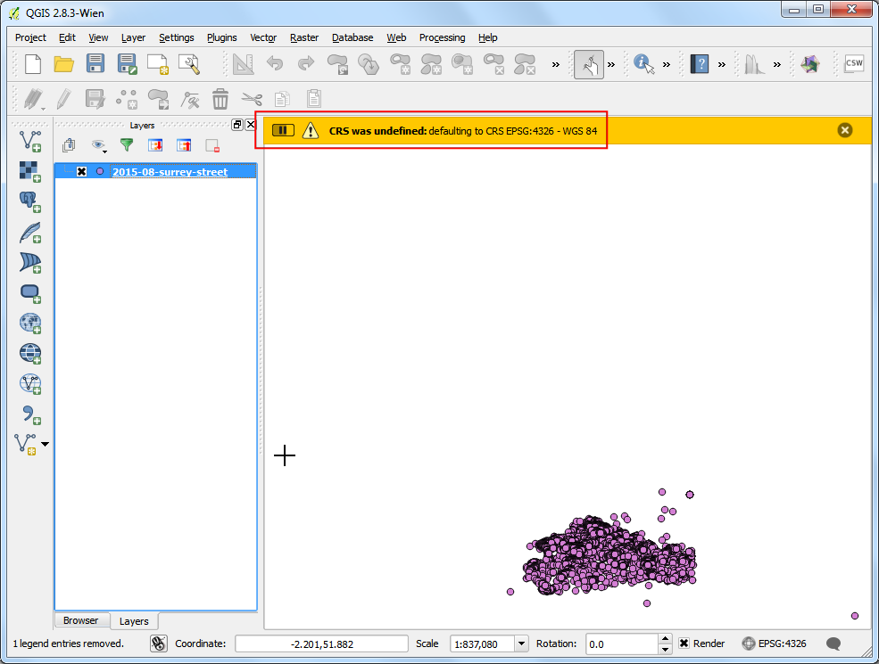
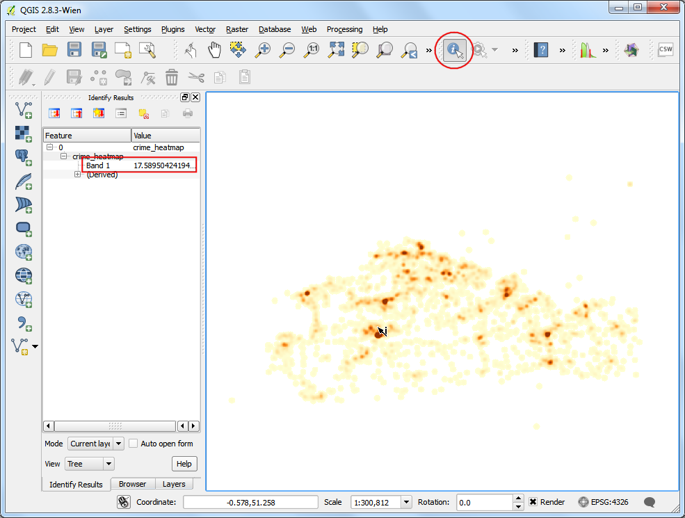
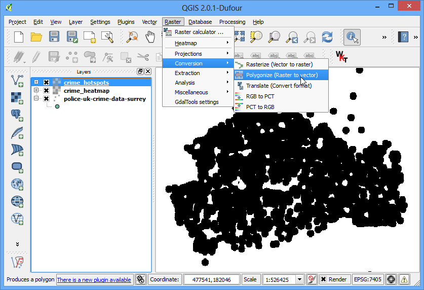
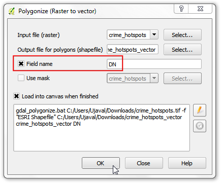

Crearea hărților calorice
Hărțile calorice reprezintă una dintre cele mai bune modalități de vizualizare a densității datelor de tip punct. Hărțile calorice sunt utilizate pentru a identifica cu ușurință aglomerările, acolo unde există o concentrare mare de activitate. Ele sunt utile, de asemenea, în efectuarea analizei aglomerărilor sau a analizei punctelor fierbinți.
Privire de ansamblu asupra activității
Vom lucra cu un set de date al locațiilor infracțiunilor din Surrey, Marea Britanie pentru anul 2011 și pentru a găsi zonele fierbinți ale criminalității din ținut.
Alte competențe pe care le veți dobândi
Obținerea datelor
data.police.uk prezintă rezultatele criminalității la nivel de stradă, oferind posibilitatea de căutare în datele stocate într-un simplu format CSV.
Descărcați datele pentru Surrey Police, apoi dezarhivați arhiva descărcată, pentru a extrage fișierul CSV.
Pentru comoditate, puteți descărca o copie a acestor date, făcând clic pe link-ul următor:
2015-08-surrey-street.csv
Sursa de date [POLICEUK]
Procedura
Pentru a începe, vom importa fișierul CSV în QGIS. (Pentru mai multe detalii, parcurgeți Importul Foilor de Calcul sau a Fișierelor CSV). Clic pe .

Navigați către fișierul 2015-08-surrey-street.csv de pe computerul dvs, apoi deschideți-l. (Numele fișieruli dvs. poate fi altul, dacă ați descărcat o copie proaspătă a setului de date). Selectați CSV (comma separated values) ca format de fișier. Veți vedea coloanele Longitudine și Latitudine selectate automat în dreptul câmpurilor X și Y. Asigurați-vă că ați bifat opțiunea Use spatial index care va accelera operațiunile efectuate asupra acestui strat. Clic pe OK.

Puteți vedea unele erori. Pentru scopul acestui tutorial le puteți ignora. Apăsați Close.

O dată ce stratul de date este încărcat în QGIS, veți vedea dialogul de avertizare CRS was undefined: defaulting to CRS EPSG:4326 - WGS84. Importarea CSV presupune existența CRS-ului EPSG: 4326, dacă coordonatele dvs. sunt date ca Latitudine/Longitudine. În cazul în care coordonatele X și Y ar fi fost într-un CRS proiectat, ați fi întâmpinat un dialog care vă solicită să alegeți CRS-ul. Atât timp cât datele dvs. se află în EPSG:4326, puteți ignora avertismentul.
Note
Dacă trebuie să schimbați CRS-ul alocat în mod automat, puteți folosi .

Măriți un pic, pentru a vedea mai bine datele. Veți observa că acestea sunt destul de dense, fiind foarte greu să vă dați seama unde ar exista o concentrare mare de puncte. Acesta este momentul când ar fi bine să aveți o hartă calorică.

Dacă trebuie să creați o hartă calorică cu caracter pur vizual sau pentru tipărire - QGIS dispune de o randare a simbologiei încorporată, denumită: guilabel: Heatmap. Să facem mai întâi o încercare. Faceți clic dreapta pe stratul 2015-08-surrey-street, apoi selectați Properties.

- In the Properties dialog, switch to the Style tab.
Select Heatmap as the renderer. You have a lot of choice of
color-ramps for the heatmap. Choose the
Oranges color-ramp. Leave the
other parameters to default and click OK.

Veți vedea o hartă calorică a datelor dvs. frumoasă de date, cu concentrări de căldură în cazul în care există o mare concentrație de criminalitate. Există destul de multe opțiuni disponibile pentru randarea hărții calorice, în scopul creării celei mai potrivite vizualizări pentru setul dvs. de date. Dacă ați vrut doar să creați o hartă calorică pentru imprimare sau inspecție vizuală - ați terminat! Dar vom explora o altă opțiune, mai puternică, de creare a hărților calorice, unde, de asemenea, puteți utiliza rezultatele în analiză.

Activați plugin-ul denumit Heatmap. Pentru a activa plugin-urile interne, parcurgeți Utilizarea Plugin-urilor. O dată ce ați activat plugin-ul, mergeți la .

În fereastra de dialog Heatmap Plugin, alegeți crime_heatmap ca nume pentru Output raster. Introduceți 1000 unități de hartă pentru Radius. Raza determină acea arie din jurul fiecărui punct, care va fi folosită în calculul căldurii pe care o primește un pixel. Bifați Advanced pentru a putea specifica dimensiunea hărții. Întroduceți 2000 ca valoare pentru Rows. Clic pe OK pentru a începe procesul de creare a hărții calorice.

O dată ce prelucrarea este terminată, veți vedea o hartă în tonuri de gri, denumită crime_heatmap, încărcată în canevasul hărții. Debifați stratul 2015-08-surrey-street.

Haideți să facem harta noastră să semene cât mai mult cu hărțile calorice tradiționale. Faceți clic dreapta pe stratul hărții calorice, apoi faceți clic pe Properties.

În fila Style, selectați Singleband pseudocolor ca Render type. Mai departe, în secțiunea Load min/max values, selectați Estimate (faster) pentru Accuracy și faceți clic pe Load. În acest mod, harta va fi scanată și se vor găsi valorile minime și maxime ale pixelilor. Valorile respective vor fi folosite în generarea unei game de culori corespunzătoare. În secțiunea Generate new color map, selectați gama de culori YlOrRd (Yellow-Orange-Red), apoi apăsați Classify. Click pe OK.

În continuare, veți vedea o redare mult mai aspectuoasă a zonelor fierbinți ale stratului. Puteți selecta instrumentul Identify și să faceți clic pe oricare pixel al hărții calorice. O valoare va fi afișată într-o fereastră de tip pop-up. Această valoare indică numărul de puncte din stratul sursă, conținute în raza specificată (în cazul nostru 1000m), având în centru pixelul respectiv.

Acum aveți stratul hărții calorice, care poate fi salvat pentru o utilizare viitoare. De multe ori, dorim să identificăm zonele calde, în cazul în care există o mare concentrație de puncte. Vom încerca acum să identificăm astfel de zone, cu ajutorul acestei hărți calorice. Mergeți la .

Mai întâi, va trebui să stabiliți o valoare de prag. Toate valorile pixelilor care depășesc acest prag, vor fi considerate ca făcând parte dintr-o aglomerare. Să folosim o valoare de 10 pentru aceste date. În fereastra de dialog Raster calculator, denumiți crime_hotspots_vector stratul de ieșire. Dublu-clic pe crime_heatmap@1 din secțiunea Raster bands, pentru a-l adăuga în zona de text Raster calculator expression. Introduceți expresia, așa cum se arată mai jos. Bifați caseta de lângă Add result to project, apoi apăsați OK.

Un nou strat denumit crime_hotspots va fi adăugat la QGIS. Acest strat are pixeli cu valori de 0 sau 1. Toți pixelii din stratul de intrare, în cazul în care valoarea pixelului a fost mai mare decât 10, au acum o valoare de 1, iar toți pixelii rămași sunt 0. Click pe .

Alegeți ca nume, pentru fișierul de ieșire, crime_hotspots_vector. Bifați casetele din dreptul Field name și Load into canvas when finished. Clic pe OK.

O dată ce conversia se termină, veți avea încă un strat suplimentar în QGIS, denumit crime_hotspots_vector. În acesta sunt reprezentate vectorial aglomerările create în etapa anterioară. Straturile conțin grupări atât cu valorile 0 cât și cu 1. Haideți să filtrăm valorile 0, pentru a obține aglomerări de zone fierbinți. Faceți clic-dreapta pe strat, apoi selectați Open Attribute Table.

În Attribute table, faceți clic pe Select feature using an expression.

Introduceți expresia de mai jos, apoi faceți clic pe Select. Ulterior, faceți clic pe Close.

În fereastra principală de atribute, veți observa unele entități evidențiate în galben. Acestea sunt entitățile care se potrivesc interogării noastre. Faceți clic dreapta pe butonul Toggle editing mode din bara de instrumente, apoi faceți clic pe butonul Delete selected features (DEL).

După ce sunt șterse entitățile selectate, faceți clic pe butonul Save Edits, apoi Comutați în modul de editare iarăși, pentru a pune stratul în modul doar-citire. Închideți fereastra tabelului de atribute.

În fereastra principală a QGIS, debifați stratul crime_hotspots. Stratul final, ``crime_hotspots_vector`,` conține aglomerările extrase din harta calorică. Aceste aglomerări reprezintă informaţiile inteligente extrase din datele inițiale, ele oferind o mai bună înțelegere, și servind drept bază de plecare pentru acțiunile viitoare.